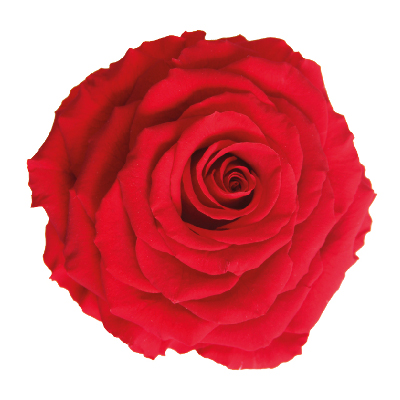
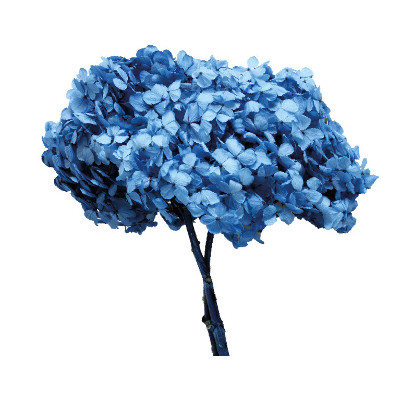
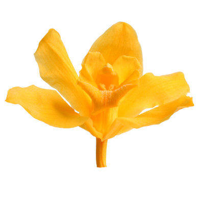
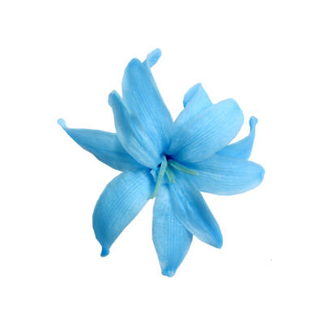
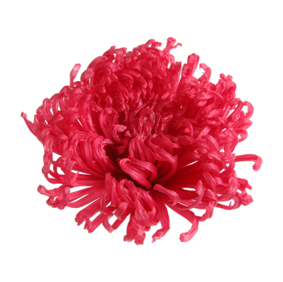
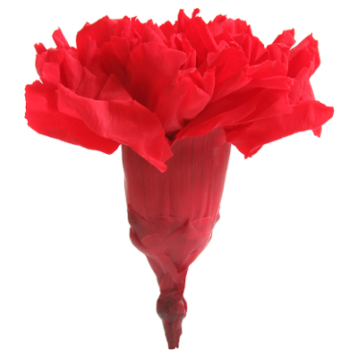
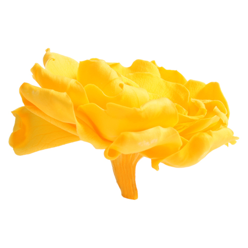
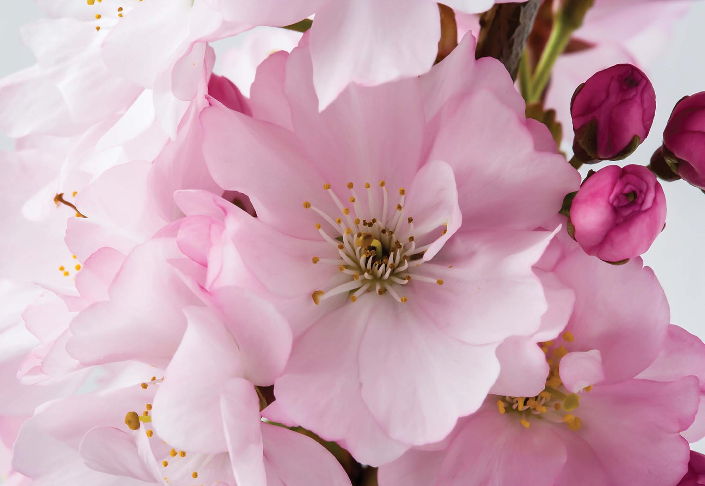
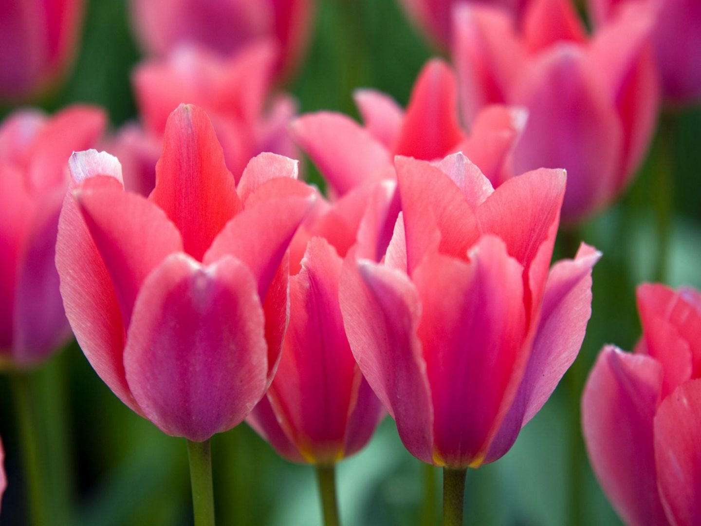

Flores
Encuentra todo tipo de flores para tu jardín: Rosas, Hortensias, Orquideas, Nardos, Crisantemos, Claveles, Gardenias, Flores de Cerezo, Tulipanes y más.
Rosas
La Rosa es considerada la flor más bonita del mundo, por ello se dice que es ‘la reina del jardín’. Es una de las flores más famosas a nivel internacional, las hay en diferentes tamaños y colores y, además están súper repartidas por todo el mundo. Son flores que sirven para decorar eventos, para crear perfumes… ¡y mucho más!.
$33.990
Hortensias
Estas flores son nativas del sur de Asia y, también son unas flores muy conocidas a nivel mundial. Es una flor de indudable belleza y muy utilizada también en decoración. Además, la hortensia es una de las flores preferidas para la creación de bouquets puesto que aporta mucho volumen y textura.
$18.990
Orquideas
La Orquídea es una Pricea flor que se utiliza mucho para decoración y, también, como regalo. Es una flor muy peculiar y que se diferencia fácilmente por la forma de sus hojas. Existen cerca de 25.000 especies diferentes, y se encuentran en muchas partes del mundo, a excepción de las zonas que tienen climas desérticos y polares.
$24.990
Nardos
El Nardo es una flor conocida como ‘la vara de San José’, perteneciente a la familia de las valerianas. Su belleza la ha convertido en una opción ideal para crear arte floral: desde centros de mesa a bouquets, entre muchas otras cosas. Es una flor muy típica en las bodas y en la decoración de las iglesias, sobre todo los nardos blancos.
$8.990
Crisantemos
El Crisantemo es una flor nativa de Asia y muy especial puesto que forma parte de las ‘Cuatro flores Junzi’. Hay muchas variedades de crisantemos y puedes encontrarlos en muchos colores diferentes: lilas, blancos, rosas, etcétera. Es una de las flores más utilizadas en la decoración de estilo boho chic.
$11.990
Claveles
El Clavel no solo es una de las flores más bonitas del mundo, también es una de las más famosas. Se cultiva en casi todos los continentes: América, Europa, Asia y África. Actualmente se conocen cinco tipos de claveles: el común, el poeta, el chino, el coronado y el de roca. En relación a sus usos cabe señalar la ornamentación.
$6.990
Gardenias
La Gardenia es una de las flores más bonitas para regalar. Esta flor es originaria de China y la puedes encontrar en multitud de colores. Llama especialmente la atención su sutileza y sus hojas brillantes y lisas.
$3.990
Flores de Cerezo
La flor de Cerezo, aunque no es la flor oficial, es una de las flores más importantes en la cultura japonesa. A los árboles que dan esta flor se les conoce como sakura. Al igual que las flores anteriores, la flor de cerezo se puede encontrar de diferentes colores en la naturaleza, aunque los colores más habituales son el rosa y el blanco.
$54.990
Tulipanes
El tulipán es uno de los principales símbolos de Holanda. Es más, Holanda es conocido como ‘el país de los tulipanes’. Es una flor con una simetría casi perfecta. Estas flores además, simbolizan la alegría, el amor y la llegada de la primavera, aunque su gran variedad de colores hace que los símbolos y significado de esta flor se amplíen considerablemente.